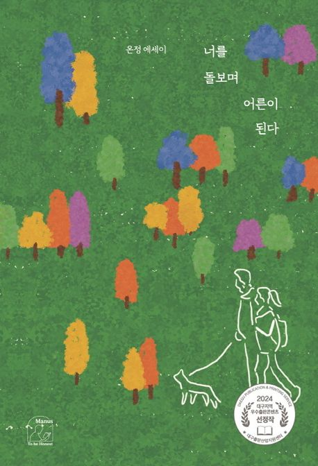
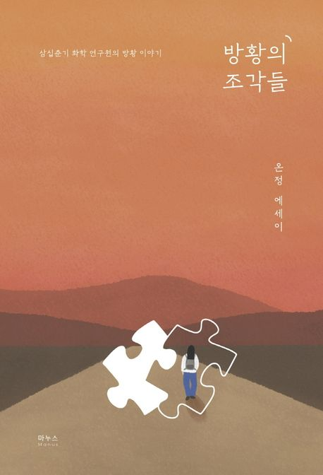

소개
- 온정
- 溫情
- Onjung
실험실에서 물질을 들여다보던 눈으로 이제는 사물과 사람, 그 사이에 머문 마음을 들여다봅니다.
여행과 방황, 상실과 돌봄에 대해 다섯 권의 책을 썼습니다. 『너를 돌보며 어른이 된다』는 2024년 대구 우수출판콘텐츠로, 『방황의 조각들』은 2022년 ARKO 문학나눔 도서로 선정되었습니다.
책
 사물을 보는 방식
사물을 보는 방식
너를 돌보며 어른이 된다
방황의 조각들 상실의 이해
상실의 이해 미서부, 같이 가줄래?
미서부, 같이 가줄래?
수상
- 대구 우수출판콘텐츠 선정
- ARKO 문학나눔 선정
- 과학소재 장르문학 단편소설 공모전 우수상
- 좋은생각 청년이야기대상 장려상